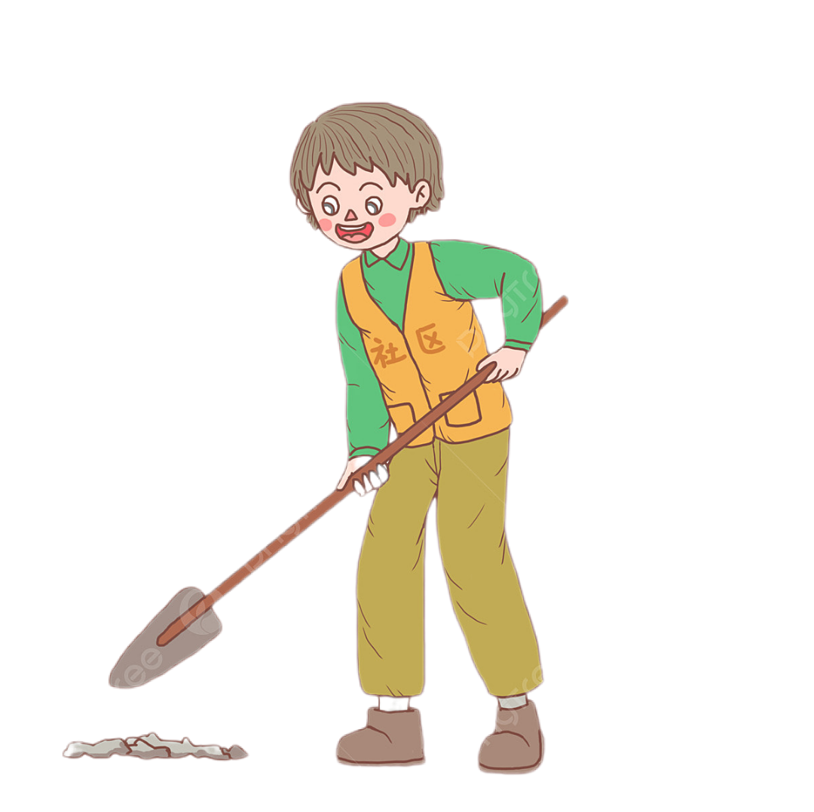
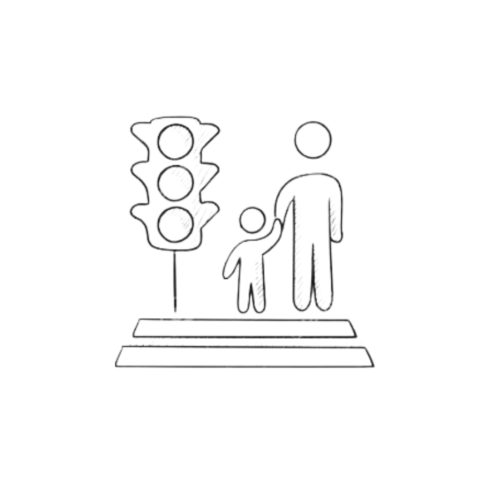

Entrevista a Doris Moreno
- ¿Que qué opina del cambio de horario?
Respuesta: El cambio de horario sucede al momento de transcribir; se colocó a las 5:40 y la hora correspondiente es a las 6:00 pm, orientaciones dadas por el CDCE en la visita que tuvimos en el mes de diciembre. - ¿Qué opina usted de que nosotros, como estudiantes, debamos hacer el acto cívico todos los días?
Respuesta: Sé buena calcular el respeto y los símbolos patrios y crear un sentido de pertenencia y responsabilidad en los estudiantes; fueron orientaciones dadas por el CDCE en el mes de diciembre. - ¿Qué opina usted de que nosotros, los estudiantes, hagamos servicio comunitario para tener un mejor ambiente escolar?
Respuesta: Es una estrategia como medida para mantener un ambiente libre de violencia.
Entrevista a Lois Betancourt
- ¿Qué opina que ya no podemos ir a la cancha si no tenemos una supervisión de una profesora ?
Respuesta: Es una estrategia que se utiliza para proteger o resguardar, ya que en noviembre un niño perdió la vida porque se estaba guindando de un tubo y le cayó en la cabeza, ya que no tenía supervisión. - ¿Qué opinas sobre que está prohibido estar por la parte de atrás de la cocina, ya que hay un pozo séptico?
Respuesta: Nos advierte como alumnos que tomemos conciencia sobre el séptico, ya que no es un área segura de estar, y yo, como directora, debo estar al cuidado mientras que están dentro de la institución, ya que no puede pagar un camión de arena para taparlo porque va a costar dinero, y lo más probable es que ponga una cinta de zona de peligro. - ¿Qué usted opina de la conversación que hay todos los días en el acto cívico para los niños para que tengan cuidado al cruzar la calle?
Lo que se busca es protección a los alumnos para que no pase un accidente automovilístico y saber que hay motos y carros que andan desviados y mirar para todos lados para que no vaya a suceder algo malo o un fallecimiento.